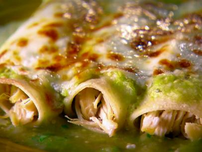
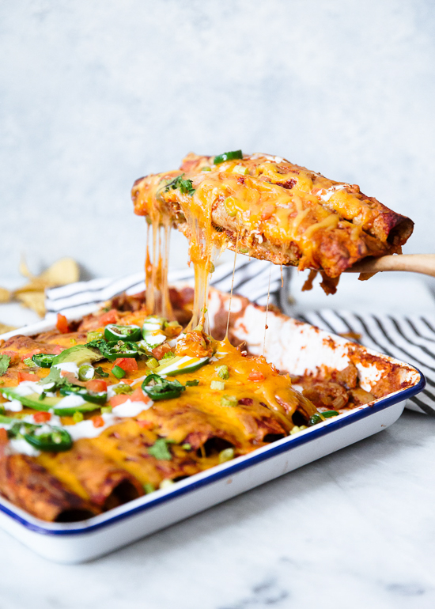
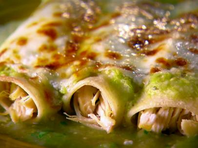
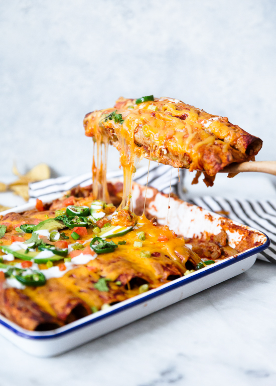

Mom's Enchilada Recipe
Mom's Enchilada Recipe
 



Recipe By: Mom
Prep Time
2 hours
Ingredients
- 1 C chopped onions
- 5 Tbsp butter
- 1/2 C chopped green pepper
- 1/4 C flour
- 1 tsp ground coriander
- 2 C chopped cooked chicken
- 3/4 tsp salt
- 1-4 oz can chopped chilies
- 2 1/2 C chicken broth
- 1 C sour cream
- 1 1/2 C shredded montery jack
- 12 6-inch flour tortillas
Instructions
- Cook onions ans peppers in 2 Tbsp butter until tender & combine in bowl with chopped chicken and chilies
- In same pan, melt 3 Tbsp butter. Stir in flour, coriander, and salt.
- Stir in broth all at once
- Cook until thickened and bubbly, then 1-2 mins more
- Remove from heat and add sour cream and 1/2 C of cheese.
- Stir 1/2 C of sauce into chicken mix
- Dip each tortilla in remaining sauce to soften (wipe off excess)
- Fill each w 1/4 C of chicken mix, roll and arrange in baking dish
- Pour remaining sauce over enchiladas
- Sprinkle remaining cheese over top
- Bake uncovered at 350 for 25 minutes or until bubbly and beginning to brown.
Nutrition Information
100% daily cholesterol
see more of my work at CarlyUX